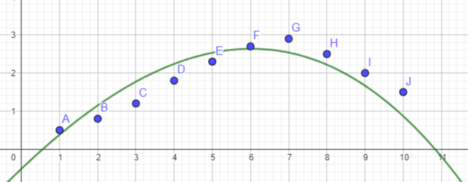

Análise Matemática do Nível do Rio Tietê
Este estudo, foca no monitoramento e modelagem matemática dos níveis do Rio Tietê, especificamente na região da Ponte do Piqueri em São Paulo. Esta é uma área historicamente afetada por inundações. O objetivo principal é utilizar modelos matemáticos para representar e prever a elevação dos níveis dos rios durante períodos de chuva contínua, auxiliando na tomada de decisões para planejamento de evacuação e mitigação de riscos.
Simulação de Níveis do Rio Durante 10 Dias de Chuva
Para desenvolver o modelo matemático, foram simulados dados de elevação do nível da água do Rio Tietê (na Ponte do Piqueri) ao longo de 10 dias consecutivos de chuva. O estudo considera que o risco de transbordamento do rio acontece quando o nível da água ultrapassa 2,0 metros.
Tabela de Níveis Simulados do Rio Tietê
| Dia | Nível do Rio (m) |
|---|---|
| 1 | 0,5 |
| 2 | 0,8 |
| 3 | 1,2 |
| 4 | 1,8 |
| 5 | 2,3 |
| 6 | 2,7 |
| 7 | 2,9 |
| 8 | 2,5 |
| 9 | 2,0 |
| 10 | 1,5 |
Modelo Matemático (Função Polinomial)
Com base nos dados simulados, uma função polinomial de terceiro grau foi determinada para modelar o comportamento do nível do rio durante os 10 dias de chuva:
f(x) = -0,0025x³ - 0,0568x² + 0,9564x - 0,5167
Nesta função, x representa o dia da observação.
Gráfico da Variação do Nível do Rio
O gráfico a seguir (Figura 1 do documento) ilustra visualmente a variação do nível do rio conforme modelado pela função polinomial ao longo dos 10 dias de chuva.

A análise da curva do gráfico indica que o nível da água aumenta nos primeiros dias, atingindo seu ponto máximo aproximadamente no sétimo dia. Após o pico, o nível começa a diminuir, mesmo com a continuidade das chuvas, possivelmente devido à redução da intensidade da chuva ou à capacidade de absorção do solo e do sistema de drenagem. O período de maior criticidade, com risco de transbordamento (nível acima de 2,0 metros), é observado entre o quinto e o nono dia.
Este tipo de modelagem matemática é uma ferramenta valiosa para a compreensão de fenômenos naturais como enchentes e contribui significativamente para o desenvolvimento de sistemas de alerta e ações preventivas em áreas urbanas vulneráveis.